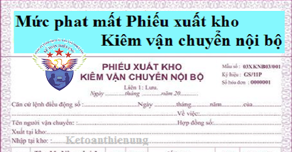

Mức phạt mất Phiếu phiếu xuất kho kiêm vận chuyển nội bộ, phiếu xuất kho hàng gửi bán đại lý. Kế toán Diệu Tâm xin tổng hợp các quy định mới nhất để các bạn tham khảo nhé.
Theo khoản 4 điều 3 Thông tư 39/2014/TT-BTC quy định: Loại và hình thức hóa đơn:
“4. Các chứng từ được in, phát hành, sử dụng và quản lý như hóa đơn gồm phiếu xuất kho kiêm vận chuyển nội bộ, phiếu xuất kho hàng gửi bán đại lý (mẫu số 5.4 và 5.5 Phụ lục 5 ban hành kèm theo Thông tư này).”
Theo Công văn 5411/TCT-CS ngày 24/11/2016 của Tổng cục thuế gửi Cục thuế tỉnh Nghệ An:
|
Kính gửi: Cục thuế tỉnh Nghệ An.
Căn cứ quy định nêu trên và trình bày của Cục Thuế tỉnh Nghệ An, trường hợp Chi nhánh Công ty TNHH Dinh dưỡng 3A bị mất liên 2 Phiếu xuất kho kiêm vận chuyển nội bộ trong quá trình chuyển trả phiếu cho bên nhận hàng thì Cục Thuế xử phạt đối với hành vi làm mất liên 2 Phiếu xuất xuất kho kiêm vận chuyển nội bộ nêu trên theo quy định của pháp luật về hóa đơn. Tổng cục Thuế có ý kiến để Cục Thuế được biết và hướng dẫn thực hiện./. |
Theo Công văn 474/TCT-CS ngày 2/2/2018 của Tổng cục thuế gửi: Cục Thuế thành phố Hà Nội.
|
Căn cứ quy định nêu trên, hành vi làm mất liên 2 Phiếu xuất kho kiêm vận chuyển nội bộ đã phát hành nhưng chưa lập hoặc hành vi làm mất liên 2 Phiếu xuất kho kiêm vận chuyển nội bộ đã sử dụng hoặc đã lập sai và đã xoá bỏ (đơn vị đã lập Phiếu xuất kho kiêm vận chuyển nội bộ khác thay thế cho các Phiếu xuất kho kiêm vận chuyển nội bộ đã lập sai và đã xoá bỏ) nhưng chưa đến thời gian lưu trữ thì xử phạt vi phạm hành chính về hóa đơn theo quy định tại Khoản 4 Điều 3 Nghị định số 49/2016/NĐ-CP ngày 27/5/2016 của Chính Phủ. |
---------------------------------------------------------------------------------------
Căn cứ theo điều 25 và điều 26 Nghị định 125/2020/NĐ-CP quy định xử phạt vi phạm hành chính về hóa đơn cụ thể như sau:
Điều 25. Xử phạt hành vi vi phạm quy định về khai báo mất, cháy, hỏng hóa đơn trước khi thông báo phát hành hoặc hóa đơn đã mua của cơ quan thuế nhưng chưa lập
1. Phạt cảnh cáo đối với hành vi khai báo mất, cháy, hỏng hóa đơn quá thời hạn từ 01 ngày đến 05 ngày, kể từ ngày hết thời hạn khai báo theo quy định và có tình tiết giảm nhẹ.
2. Phạt tiền từ 1.000.000 đồng đến 4.000.000 đồng đối với hành vi khai báo mất, cháy, hỏng hóa đơn quá thời hạn từ 01 ngày đến 05 ngày, kể từ ngày hết thời hạn khai báo theo quy định, trừ trường hợp quy định tại khoản 1 Điều này.
3. Phạt tiền từ 4.000.000 đồng đến 8.000.000 đồng đối với một trong các hành vi sau đây:
a) Khai báo mất, cháy, hỏng hóa đơn quá thời hạn từ 06 ngày trở lên, kể từ ngày hết thời hạn khai báo theo quy định;
b) Không khai báo mất, cháy, hỏng hóa đơn.
Điều 26. Xử phạt hành vi làm mất, cháy, hỏng hóa đơn
1. Phạt cảnh cáo đối với một trong các hành vi sau đây:
a) Làm mất, cháy, hỏng hóa đơn đã lập (trừ liên giao cho khách hàng) trong quá trình sử dụng, đã kê khai, nộp thuế, có hồ sơ chứng từ chứng minh việc mua bán hàng hóa, dịch vụ và có tình tiết giảm nhẹ;
Nghĩa là: Mất liên 1, liên 3 ... (trừ liên 2, liên giao cho khách hàng)
b) Làm mất, cháy, hỏng hóa đơn đã lập sai, đã xóa bỏ và người bán đã lập hóa đơn khác thay thế cho hóa đơn lập sai, xóa bỏ này.
2. Phạt tiền từ 3.000.000 đồng đến 5.000.000 đồng đối với hành vi làm mất, cháy, hỏng hóa đơn đã lập (liên giao cho khách hàng) trong quá trình sử dụng, người bán đã kê khai, nộp thuế, có hồ sơ, tài liệu, chứng từ chứng minh việc mua bán hàng hóa, dịch vụ và có tình tiết giảm nhẹ.
Trường hợp người mua làm mất, cháy, hỏng hóa đơn phải có biên bản của người bán và người mua ghi nhận sự việc.
Nghĩa là: Mất liên 2, liên giao cho khách hàng.
3. Phạt tiền từ 4.000.000 đồng đến 8.000.000 đồng đối với một trong các hành vi sau đây:
a) Làm mất, cháy, hỏng hóa đơn đã phát hành, đã mua của cơ quan thuế nhưng chưa lập;
b) Làm mất, cháy, hỏng hóa đơn đã lập (liên giao cho khách hàng) trong quá trình sử dụng, người bán đã kê khai, nộp thuế, có hồ sơ, tài liệu, chứng từ chứng minh việc mua bán hàng hóa, dịch vụ.
- Trường hợp người mua làm mất, cháy, hỏng hóa đơn phải có biên bản của người bán và người mua ghi nhận sự việc.
4. Phạt tiền từ 5.000.000 đồng đến 10.000.000 đồng đối với hành vi làm mất, cháy, hỏng hóa đơn đã lập, đã khai, nộp thuế trong quá trình sử dụng hoặc trong thời gian lưu trữ, trừ trường hợp quy định tại khoản 1, 2, 3 Điều này.
5. Trường hợp mất, cháy, hỏng hóa đơn quy định tại khoản 2 và điểm b khoản 3 Điều này do lỗi của bên thứ ba, nếu bên thứ ba thực hiện giao dịch với người bán thì người bán là đối tượng bị xử phạt, nếu bên thứ ba thực hiện giao dịch với người mua thì người mua là đối tượng bị xử phạt.
Người bán hoặc người mua và bên thứ ba lập biên bản ghi nhận sự việc mất, cháy, hỏng hóa đơn.
-----------------------------------------------------------------------------------------------------
Tham khảo thêm: Theo Công văn 2955/TCT-CS ngày 01/07/2016 của Tổng cục thuế gửi Cục Thuế tỉnh Đắk Nông.
Kính gửi: Cục Thuế tỉnh Đắk Nông Trả lời công văn số 1344/CT-AC ngày 19/04/2016 của Cục Thuế tỉnh Đắk Nông về việc xử phạt mất Phiếu xuất kho kiêm vận chuyển nội bộ, Tổng cục Thuế có ý kiến như sau: Căn cứ tại khoản 4 Điều 38 Nghị định số 109/2013/NĐ-CP ngày 24/09/2013 của Chính phủ quy định về xử phạt vi phạm hành chính trong lĩnh vực quản lý giá, phí, lệ phí, hóa đơn. Căn cứ tại khoản 2 Điều 24 Thông tư số 39/2014/TT-BTC ngày 31/03/2014 của Bộ Tài chính hướng dẫn về hóa đơn.
Căn cứ tại Điều 12 Nghị định số 105/2013/NĐ-CP quy định về xử phạt hành chính trong lĩnh vực kế toán, kiểm toán độc lập. Trường hợp Công ty CP kỹ nghệ gỗ MDF Long Việt xuất Phiếu xuất kho kiêm vận chuyển nội bộ ký hiệu AA/14P số 1372 ngày 25/02/2016 thuê Công ty TNHH TMDV Đồng Tâm vận chuyển từ kho thành phẩm về kho văn phòng đại diện, trong quá trình vận chuyển sơ suất làm mất liên 2 Phiếu XK kiêm VCNB nêu trên thì Cục Thuế tỉnh Đắk Nông chuyển hồ sơ vi phạm quy định về bảo quản, lưu trữ tài liệu kế toán cho cơ quan có thẩm quyền xử phạt theo quy định về xử phạt vi phạm hành chính trong lĩnh vực kế toán. Tổng cục Thuế trả lời để Cục Thuế tỉnh Đắk Nông được biết./. |
Theo Điều 15 Nghị định số 41/2018/NĐ-CP quy định mức xử phạt vi phạm hành chính về kế toán:
"2. Phạt tiền từ 5.000.000 đồng đến 10.000.000 đồng đối với một trong các hành vi sau:
a) Lưu trữ tài liệu kế toán không đầy đủ theo quy định;
b) Bảo quản tài liệu kế toán không an toàn, để hư hỏng, mất mát tài liệu trong thời hạn lưu trữ;
c) Sử dụng tài liệu kế toán trong thời hạn lưu trữ không đúng quy định;
d) Không thực hiện việc tổ chức kiểm kê, phân loại, phục hồi tài liệu kế toán bị mất mát hoặc bị hủy hoại."
--------------------------------------------------------------------------------------------------------------
Kế toán Diệu Tâm xin chúc các bạn thành công!
